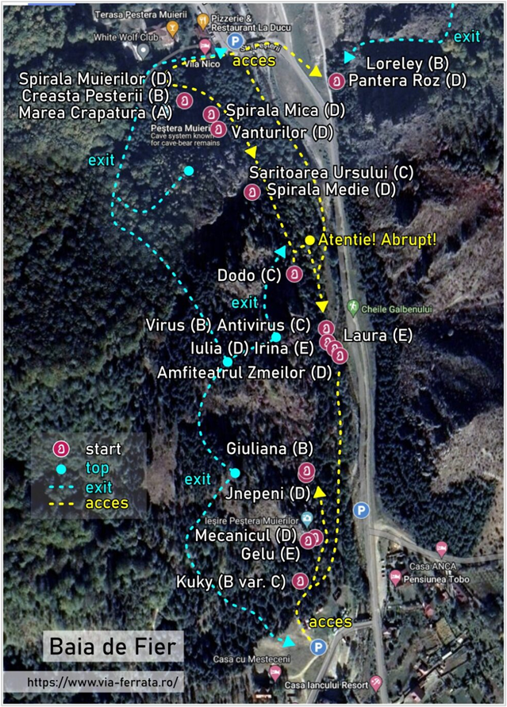
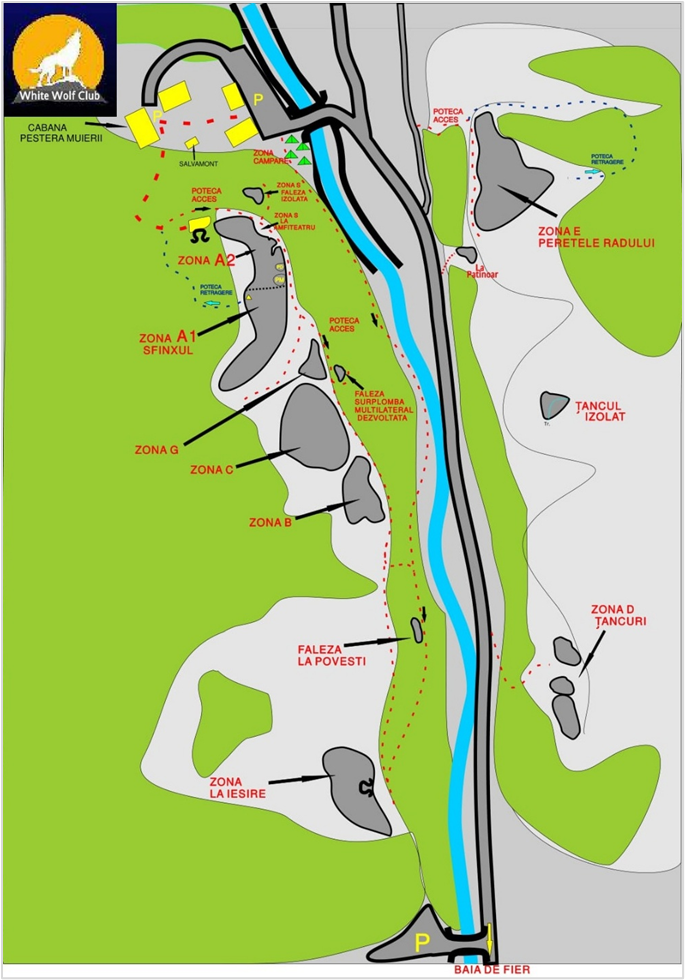
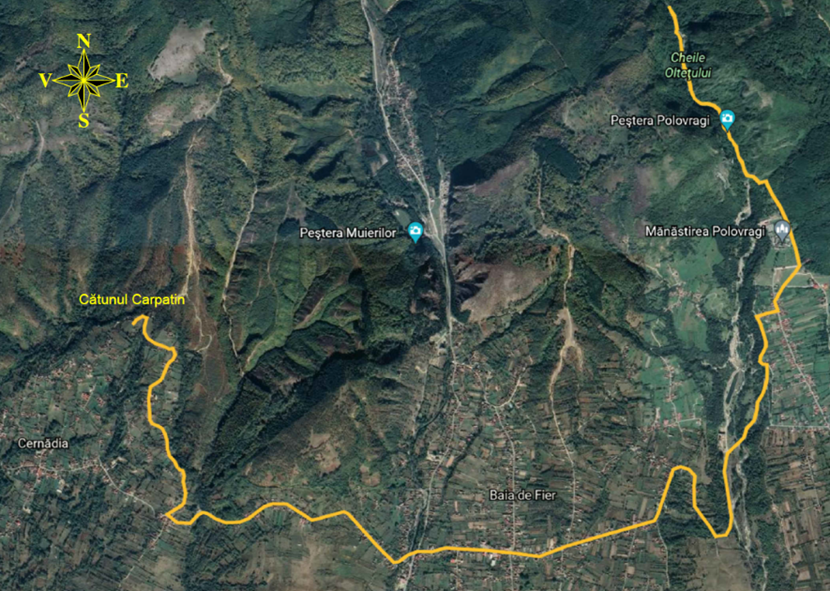

Via Ferrata

Harta traseelor Via Ferrata — Baia de Fier
21 trasee de via ferrata în Cheile Galbenului, lângă Peștera Muierilor: 6 ușoare (A), 5 medii (B–C), 10 dificile–extreme (D–E). Administrate de White Wolf Club.
Trasee pentru începători — Cheile Galbenului
6 trasee de dificultate ușoară, ideale pentru prima experiență de via ferrata. Echipament obligatoriu: ham, longe ABC, cască.
Trasee intermediare — Cheile Galbenului
5 trasee de dificultate medie, secțiuni mai expuse și prize tehnice. Recomandat cel puțin o ieșire anterioară.
Escaladă

Harta zonelor de escaladă — Baia de Fier & Polovragi
Cheile Galbenului oferă peste 150 de rute de escaladă pe pereți de calcar, de la 3a pentru începători până la 7c pentru cățărători experimentați.
Rute sportive pentru începători
Rute cu pitoane fixe, prize mari, linie clară. Ideale pentru primele experiențe pe calcar. Pantofi de cățărat, ham și coardă obligatorii.
Rute avansate & multi-pitch
Trasee tradiționale și multi-pitch pe peretele principal. Mișcări tehnice, prize mici. Necesită experiență în plasarea asigurărilor mobile.
Mountain Bike
Râul Galben – Baia de Fier
Traseu MTB pe drumuri forestiere și poteci montane. Dificultate ridicată — recomandat persoanelor cu experiență și condiție fizică bună.
Polovragi – Vârful Nedeia
Traseu MTB extins cu urcuș semnificativ. Foarte dificil — recomandat exclusiv persoanelor cu experiență solidă în mountain bike.
ATV

Harta zonelor ATV — Baia de Fier & Polovragi
Zona Baia de Fier – Polovragi dispune de 2 trasee principale de ATV, cu grade de dificultate variind de la redus la mediu, durate cuprinse între 2 și 3 ore și lungimi de 15 km, respectiv 20 km, ambele desfășurându-se pe drumuri forestiere și poteci montane.